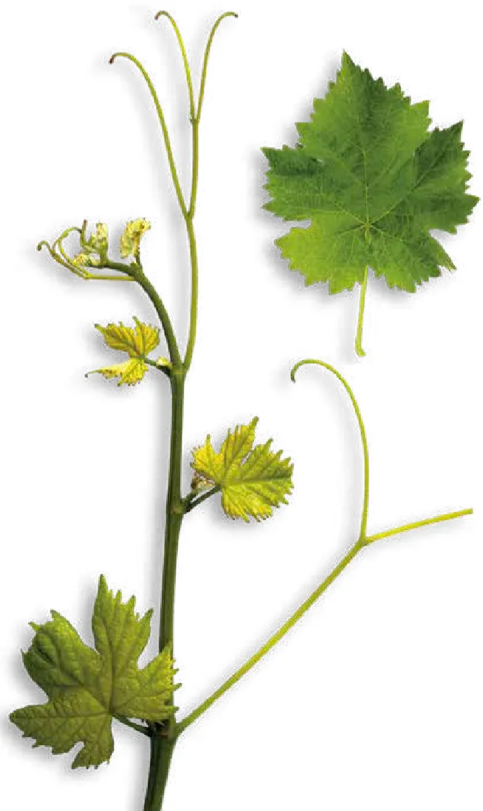
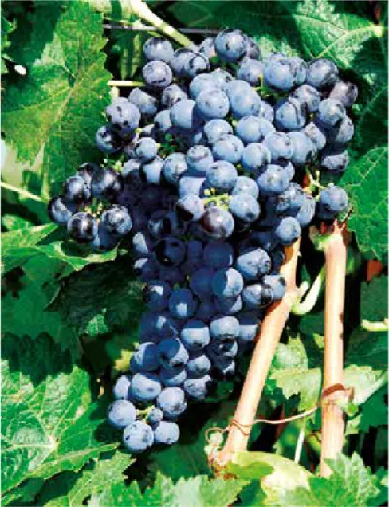

Kapitel 3 · Die portugiesischen Rebsorten
Trincadeira (R) / Tinta Amarela / Trincadeira Preta
Herkunft:
Vicêncio Alarte erwähnte die Sorte 1711. Lacerda Lobo (1790) kannte sie in der Beira Interior. Vila Maior (1875) beschrieb sie als alte Sorte, die vom Douro bis zum Tejo und in den Alentejo verbreitet war. Alentejo und alle heißen Regionen des Landes; Australien 30 ha.

Weinbeschreibung:
Die Weine sind intensiv granatrot. Jung trägt ihr Aroma Noten reifer Pflaumen, es überwiegt jedoch ein grasiges, etwas pfeffriges Aroma. Mit der Reife entwickelt sich ein äußerst feines und komplexes Aroma von gekochten Früchten. Die Trincadeira ist weich im Mund, etwas herb, mit einem Geschmacksprofil ähnlich ihrem Aroma (P. Laureano). Die Weinqualität hängt von den Bedingungen im Weinberg ab. Werden die richtigen Trauben erzeugt, ergibt sie einen ausgezeichneten Wein; sind die Umweltbedingungen dagegen nicht ideal (Feuchtigkeit, kürzere Reifezeit), leidet die Qualität.
Regionale Einstufung:
Vinho de Qualidade DOC: Porto, Douro, Távora-Varosa.
Vinho de Qualidade IPR: Chaves, Valpaços, Planalto Mirandês.
Landwein: Minho, Trás-os-Montes, Beira Interior, Provinz Estremadura, Tejo, Terras do Sado, Alentejo, Algarve.
Morphologie:
Junger Trieb (Form der Triebspitze): offen, weiß, mit mittlerer, gleichmäßig verteilter Anthocyanfärbung.
Junges Blatt: gelb, Behaarung mittlerer Dichte.
Blütenstand (Blütengeschlecht): zwittrig.
Junger Trieb: Knoten und Internodien rot gestreift, grün auf beiden Seiten. Mittelkurze Ranken.
Ausgewachsenes Blatt: mittelgroß, fünfeckig, fünflappig, mittelgrün. Profil der Spreite unregelmäßig, mittlere Blasigkeit und leichte Kräuselung der Oberseite. Konvex-konkave Zähne mittlerer Größe, gleichmäßig in Länge und Breite; überlappende V-förmige Stielbucht; offene V-förmige obere Seitenbuchten, anliegende Haare mittlerer Dichte auf der Unterseite. Blattstiel kürzer als die Hauptader.
Traube: mittelgroß, mittlere Dichte. Mittellanger Stiel mit mittlerer Verholzung.
Beere: mittelgroß, leicht abgeflacht; blauschwarz; dünne Haut, bei Reife bereift. Farbloses Fruchtfleisch, weich und sehr saftig, kurzes Beerenstielchen.
Holztrieb: gelbbraun.
Phänologie:
Austrieb: 3 Tage nach der Castelão.
Blüte: 1 Tag nach der Castelão.
Farbumschlag der Beere: 4 Tage vor der Castelão.
Lesereife der Beere: 15 Tage vor der Castelão.
Vegetatives und agronomisches Potenzial:
Wuchskraft der Triebe: hoch.
Schnittholzgewicht: 4–5 t/ha, je nach Klon.
Triebhaltung (Wuchsform): halbaufrecht, einige hängende lange Triebe.
Trieblänge: mittel, einige lang.
Neigung zur Geiztriebbildung: gering.
Mehrfachaustrieb: gering (17 % der Knospen).
Fruchtbarkeitsindex der Knospen: mittel; 1,32 im Alentejo; im Douro 1 = 1,0; 2 = 1,4; 3 = 1,68 Blütenstände je Trieb.
Ertrag: hoch. Index 314 (12–20 t/ha). Statistischer RNSV-Wert: 1,43 kg/Rebe (Mittel von mindestens 40 Klonen in Almeirim über 2 Jahre).
Ertragsbeständigkeit: kehrt nach Jahren übermäßigen Ertrags auf das von Önologen gewünschte Niveau zurück.
Gleichmäßigkeit des Ertrags: gleichmäßig.
Winkler-Index: 1.557 bei einem Ertrag von 11 t/ha (Montemor).
Empfindlichkeit gegenüber abiotischen Faktoren: Beeren empfindlich gegenüber Regen und trockener Hitze.
Anfälligkeit für Pilzkrankheiten: sehr anfällig für Traubenbotrytis, weniger anfällig für Peronospora.
Traubengröße: mittel bis groß (210–300 g), konisch, abgeflacht. Größe abhängig vom Klon.
Dichte der Traube: dicht.
Beerengröße: mittel bis klein (1,2–2 g), je nach Klon, leicht ablösbar.
Beerenhaut: wenig ausgeprägt, empfindlich, sehr dünn.
Bodenansprüche: leichte oder sandige, wenig fruchtbare Böden, trocken oder gut durchlässig.
Klimaansprüche: heiß, mit vielen Sonnenstunden. Bei zu großer Hitze droht jedoch das Austrocknen der Beeren.
Bewässerung: empfohlen, besonders bei Laubschnitt zur Ertragsregulierung, aber auch gegen übermäßige Trockenheit.
Verrieseln/Kleinbeerigkeit: gering.
Verderb reifer Beeren: anfällig, meist durch Schimmelfäule.
Vogelfraß: Schutz dringend nötig, sobald Vogelfraß einsetzt.
Eignung für maschinelle Lese: bei niedrigeren Temperaturen geeignet, um das Problem schimmelnder Trauben zu vermeiden.
Önologie
Weintyp: Qualitätswein, Dessertwein.
Potenzieller Alkoholgehalt: hoch (12,5–14 % vol.) bei nur 8 t/ha Ertrag. Statistischer RNSV-Wert: 12,99 % vol. (Mittel von mindestens 40 Klonen in Cartaxo über 5 Jahre).
Natürliche Säure des Mostes: mittel (4,5–5,5 g/l Weinsäure). Statistischer RNSV-Wert: 3,56 g/l (Mittel von mindestens 40 Klonen in Cartaxo über 5 Jahre).
Gesamtanthocyane: statistischer RNSV-Wert 751,53 mg/l (Mittel von mindestens 40 Klonen in Cartaxo über 5 Jahre).
Gesamtphenolindex des Mostes (bei 280 nm): 18–38, je nach Klon. Statistischer RNSV-Wert: 30,01 (Mittel von mindestens 40 Klonen in Cartaxo über 5 Jahre).
Oxidationsrisiko des Mostes: anfällig.

Farbintensität des Weins: intensives Granatrot (20–50), je nach Klon unterschiedlich.
Farbton des Weins: 5–15, je nach Klon.
Oligomere Procyanidine: B1 39,0–96,6; B2 9,2–18,1 mg/l; T2 1,4–14,7 mg/l.
Gesamtpolyphenolindex (bei 280 nm): 14–40.
Oxidationsrisiko des Weins: mittel.
Aromaprofil: Analyse gebundener Aromen (Alentejo 1997 und 1998): Terpenoide gesamt 114 μg/l (1997), 170 μg/l (1998); Benzenoide gesamt 681 μg/l (1997), 828 μg/l (1998); Norisoprenoide gesamt 210 μg/l (1997), 406 μg/l (1998).
Alterungspotenzial: sehr gut bei besonders hochwertigen Weinen; besonders geeignet für den Fassausbau.